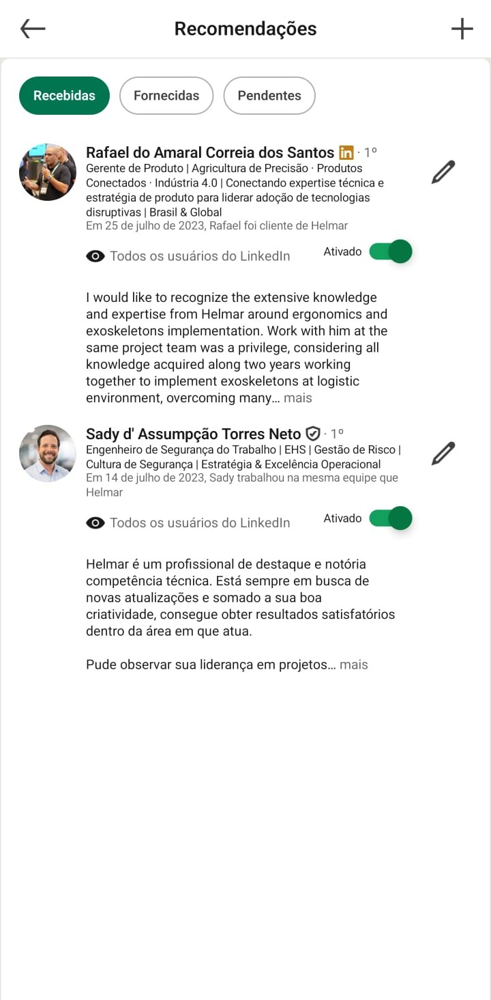

Risco visível
Mapeamento técnico dos fatores físicos, cognitivos e organizacionais.
Fisioterapia do Trabalho Especializada
A FITE transforma AEP, AET e gestão de riscos ergonômicos em decisões técnicas para empresas que precisam reduzir afastamentos, cumprir requisitos legais e elevar performance operacional.
O problema que a FITE resolve
Empresas industriais e corporativas precisam provar controle: identificar risco, priorizar intervenção, acompanhar indicadores e demonstrar evolução em auditorias.
A FITE posiciona a ergonomia como sistema de gestão, conectando campo, legislação, produtividade, inclusão e qualidade de vida no trabalho.
Mapeamento técnico dos fatores físicos, cognitivos e organizacionais.
Critérios para separar urgência operacional, obrigação legal e melhoria contínua.
Indicadores diretos e indiretos que sustentam decisões perante liderança e auditoria.

Método FITE
Serviços
Análise Ergonômica Preliminar e Análise Ergonômica do Trabalho com leitura técnica, legal e operacional.
Estruturação de matriz, prioridades, plano de ação, evidências e indicadores de acompanhamento.
Programas de prevenção, cultura de saúde ocupacional, palestras, SIPATs e eventos corporativos.
Projetos voltados à inclusão, CIF, reintegração gradual e adaptação de processos.
Protocolos avançados para implementação, treinamento e análise de exoesqueletos em linhas produtivas.
Desenvolvimento de carreira, visão consultiva e gestão técnica para profissionais da área.


Prova social real: recomendações e trajetória profissional usadas como reforço de confiança.
Artigos técnicos
Uma biblioteca editorial FITE sobre ergonomia, NR-17, riscos psicossociais e exoesqueletos industriais, organizada para leitura técnica e consulta comercial.
Estudo sobre confiabilidade, eficiência e aplicação de exoesqueletos em linha de produção industrial.
Ler artigoAnálise sobre critérios de aceitação, adaptação do trabalhador e efeitos psicossociais da tecnologia.
Ler artigoPráticas ergonômicas para melhorar conforto, segurança, foco e produtividade no ambiente corporativo.
Ler artigoLeitura sobre identificação, prevenção, evidências e gestão dos fatores psicossociais no trabalho.
Ler artigoArtigo sobre ergonomia, NR-1, riscos ocupacionais e prevenção de afastamentos com gestão técnica.
Ler artigoPresença e conteúdo


Próximo passo
Conte o contexto da sua operação e a FITE retorna com o melhor caminho: diagnóstico, AEP/AET, programa de ergonomia, palestra, SIPAT ou mentoria.